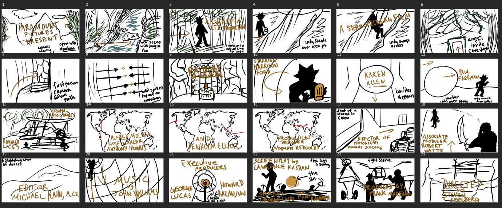

Since I was a child, I have always loved the Indiana Jones movies. As a tribute, I created an animated opening credits sequence for the film Raiders of the Lost Ark. This was my second animation project, and learning to use the tools provided in Adobe Animate was both fun and challenging. I also enjoyed creating assets in Adobe Photoshop and Illustrator and piecing everything together into a cohesive sequence.

Before animating, I created a storyboard to map out my ideas. I watched the film and selected standout scenes to sketch in Adobe Photoshop. These sketches were compiled into a storyboard, serving as the blueprint for my animation.After piecing together my drawings in Animate, I finalized the sequence with text overlays in Premiere Pro. While some storyboarded scenes were cut, this project was an incredibly rewarding learning experience. Seeing the final product come together was a highlight of my journey.